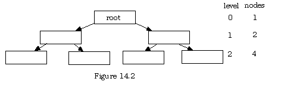

As with the treatment of sorting, it is natural to ask whether the problems of linear access to data that become evident with linked lists (whether viewed as lists, stacks, queues, or tables) can be overcome by organizing the data in some manner that is not strictly sequential. There is another data structure that can be employed to cut down on the amount of search time considerably; it involves attaching the connecting strands in such a way that a given item (node) in the structure can point to more than one other successor item.
As before, there is a unique first item that has no predecessor in the structure, and a pointer (initially NIL) is kept to this item, but this time the first node is called the root rather than the head.
A data structure in which all nodes may have more than one successor and all nodes except one (the root) have one predecessor is called a tree.
In figure 14.1, each box represents a node that encapsulates some data elements and some pointers to subsequent nodes. Pointers without nodes attached would be given the value NIL to mark the end of a chain of descent through the tree. In this diagram, some of the boxes have two pointers and some have three, which is all right in an abstract tree in mathematics, but will not do for the data structures here, as one would want all the nodes to be of the same Node Type.
So, usually, one works with a small but fixed number of pointers. In the simplest possible case, this number is two. The root item has two pointers, called a left and right pointer, and the items pointed to in turn each point to at most two more, (also via left and right pointers) and so on, through possibly several levels. As with other structures, one eventually gets to items with no successors; their pointers are set to NIL
A tree whose nodes each have two pointers to potential subsequent nodes is called a binary tree.
Here are some commonly used terms that apply to all trees, whether binary or not.
The number of pointer links required to move from a given node to the root node is called the level of that node.
The highest level number of any node in a tree is its depth.
A node with no successors (both pointer values are NIL) is called a leaf.
An immediate successor node is called a child of its predecessor.
An immediate predecessor node is called the parent of its children.
Nodes with a parent-child path of length one or more between them are called ancestors and descendents. The root has no ancestors, and leaves have no children.
The maximum number of children a node can have is called the degree of the node (and hence, by extension, the degree of the tree.)

At level i there are potentially 2i items, and if there are n levels, then there are at most (2(n+1)) - 1 items in the tree altogether. At the last level, there are many NIL pointers, and for simplicity, these have not been shown on this diagram. Of course, the tree may have some positions not filled on one or more levels, but it is possible to characterize a tree that has the maximum number of items actually present by the following:
If all the NIL pointers on level n are NIL (no children) then the tree is full.
Notice that this use of the term full is different that earlier uses of the same word. Here, it does not mean that no more items can be added (just start on the next level). Rather it means that all potential positions up to the given level are actively being used. Of course, if the attempt to allocate memory for a new node fails, the tree could be full full, not just mathematically or abstractly full.
What is the advantage of using a tree to store data nodes? Observe that a 15-item collection has only four levels when organized this way and a pointer-by-pointer search for data starting at the root will take at most four pointer assignments, including the first, whereas the same search on strictly linear (un-indexed) data could take fifteen steps. In other words,
Linear searches are O(n) but searches in binary trees are O(log2n).
All that remains is to develop a rule whereby new data is sorted into a tree. The same rule can be adapted for the traversal of a tree, whether it is to search for an item or to process them all. The most commonly used rule for binary trees is:
If an item is less, it goes on the left; if it is greater, it goes on the right.
Data whose key items are the cardinals 4, 10, 19, 1, 78, 17, and 12 arrive to be entreed into the binary tree above. The first item is placed in the root node, the second is greater, so it goes into the left child node of the root. The third is greater than the root and goes into tits right child, producing figure 14.3 at this stage.
Now the number 1 arrives. It is less than 14 so move left, and less than 10, so move left again. Here there is no node yet, so make one. Likewise, the number 78 goes at the far right, 17 to the right of 14 and then the left of 19, and finally 12 goes to the left of 14 and the right of 10, neatly filling the tree as shown in figure 14.4.
When the tree is traversed for searching or processing, there are three possible orders in which the traversal can be done (recursively).
In-order traversal: left child, parent, right child.
Pre-order traversal: parent, left child, right child.
Post- order traversal: left child, right child, parent.
For instance in the above tree, if the data were processed in-order starting at the root, the processor would postpone the root and go left, postpone that node as a parent and go left again, and so on until reaching a leaf. This leaf would be processed, then its parent, then anything to the right of that parent in the same fashion. Next, processing would back up to the parent of that parent and process to its right (the left is done.) The rightmost child is processed last. This yields (for the tree above)
1, 10, 12, 14, 17, 19, 78
The same tree traversed pre-order would result in processing the nodes in the sequence:
14, 10, 1, 12, 19, 17, 78
The same tree traversed post-order would result in processing the nodes in the sequence:
1, 12, 10, 17, 78, 19, 14
Notice that a slight change to the data results in a rather different tree. For instance suppose the number 17 were changed to the number 21. It would have gone right of the 19 and then left of the 78, producing the tree in figure 14.5.
An in traversal of this tree processes the nodes in the sequence:
1, 10, 12, 14, 19, 21, 78
which is, as above, the correct order from lowest to highest. Indeed, a binary tree filled with the rule "left is less and right is more" can always be traversed in-order to process the elements in their sorted order. There may be times when one of the other two processing orders are more useful, but for sorted binary trees, it seems that only one of the methods is of immediate use. It is useful for the purposes of this work to think of a parent and all of its descendents as a sub-tree of the original tree. In so doing, such processing provides a interesting illustration of recursion.
For instance, suppose one had:
TYPE
ShortString = ARRAY [0..10] OF CHAR;
NodePointer = POINTER TO Node;
Node =
RECORD
name : ShortString;
(* more data fields here *)
leftPoint, rightPoint : NodePointer;
END;
ActionProc = PROCEDURE (NodePointer);
VAR
root : Point;
Then, assuming the list to have been correctly initialized, the following procedure will take the pointer to any node and process the data at all following nodes (descendents) from the given parent:
PROCEDURE InTraverse (parent : NodePointer, Proc :ActionProc);
BEGIN
IF root # NIL
THEN
InTraverse (parent^.leftPoint, Proc);
ActionProc (parent);
InTraverse (parent^.rightPoint, Proc);
END;
END PrintTree;
If the desired processing involved printing out data elements, a procedure such as :
PROCEDURE WriteNode (point : NodePointer);
BEGIN
WITH point^
DO
WriteString (name);
(* print other fields here *)
END;
END WriteNode;
could be executed on the entire tree with the call
InTraverse (root, WriteNode);
and, if necessary, corresponding PreTraverse and PostTraverse procedures could easily be constructed from InTraverse by reordering the three lines. In a more complex situation, one would modify this to print out as much of the data as required at each node before printing the left and right sub-trees. If all this were to be encapsulated in a library, some additional definitions would be necessary to account for the opacity of the type Tree and the traverse procedure available to the outside world would be written with a tree parameter rather than with a node pointer parameter.